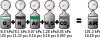

partial_pressure
property

Source: Wikipedia
Wikipedia Page (Something wrong with this association? Let us know.)
Wikidata Page (Something wrong with this association? Let us know.)
Occurs in:
- atmosphere_bottom_air_water~vapor__partial_pressure
- air~saturated_water~vapor__partial_pressure
- atmosphere_air_carbon-dioxide~equilibrium__partial_pressure
- atmosphere_air_carbon-dioxide__partial_pressure
- atmosphere_air~saturated_carbon-dioxide__partial_pressure
- atmosphere_air_water~vapor~equilibrium__partial_pressure
- atmosphere_air_water~vapor__partial_pressure
- atmosphere_air~saturated_water~vapor__partial_pressure
- atmosphere_bottom_air_carbon-dioxide~equilibrium__partial_pressure
- atmosphere_bottom_air_carbon-dioxide__partial_pressure
- atmosphere_bottom_air~saturated_carbon-dioxide__partial_pressure
- atmosphere_bottom_air_water~vapor~equilibrium__partial_pressure
- atmosphere_bottom_air~saturated_water~vapor__partial_pressure
- atmosphere_air_carbon-dioxide__partial_pressure
- atmosphere_air_water~vapor__partial_pressure
- atmosphere_air~saturated_water~vapor__partial_pressure
- sea_surface_air_carbon-dioxide__partial_pressure
- sea_surface_air_water~vapor__partial_pressure
- sea_surface_water_carbon-dioxide__partial_pressure
- sea_water_carbon-dioxide__partial_pressure